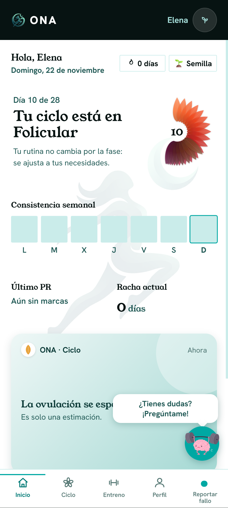
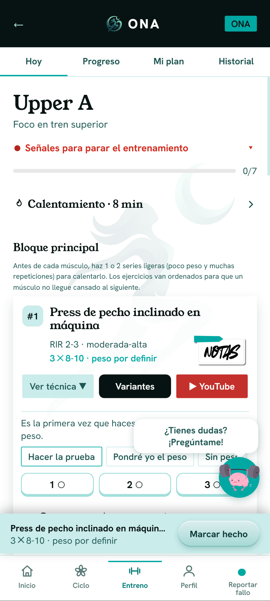
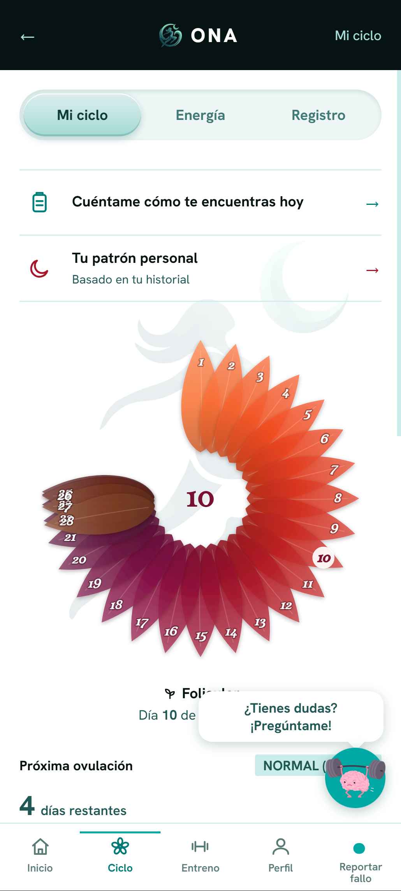
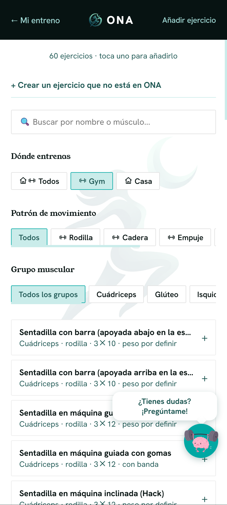

ONA adapta la ciencia del ejercicio y la biomecánica clínica a cada etapa vital de la mujer: ciclo menstrual, embarazo, posparto y menopausia. Sin culpas, sin algoritmos genéricos masculinos y con privacidad absoluta on-device.
Ejercicios con cribado clínico
Etapas fisiológicas integradas
Local-First & Datos Privados
Anuncios ni rastreo externo

Capturas reales de la aplicación en producción. Diseñada bajo una paleta clara y cercana, sin cristal ni distracciones, centrada en la experiencia de la usuaria.
Saludo contextual, estado de la fase hormonal (ej. folicular día 9), consistencia semanal de entreno y alertas clínicas activas.

Rutina Full Body adaptada. Registro de series interactivas, repeticiones, cargas (kg), cálculo de RIR objetivo y técnica en vídeo.

Curvas hormonales de estradiol y progesterona, impacto en la sensibilidad insulínica y diario evolutivo de energía.

Más de 240 ejercicios con etiquetado clínico de seguridad (Apto, Adaptar o No recomendado) según cada trimestre y patología.
El cuerpo femenino no es lineal ni estático. ONA sincroniza el volumen, la intensidad y la selección biomecánica según el entorno hormonal y las exigencias funcionales de cada etapa.
Adaptación a las fases folicular, ovulatoria, lútea y menstrual. Aprovechamiento del estradiol para picos de fuerza y modulación del volumen en la fase lútea con mayor termogénesis y fatiga.
Programación segura por trimestres (T1, T2 y T3). Protección de la pared abdominal y suelo pélvico, eliminando decúbitos supinos prolongados y controlando la presión intraabdominal.
Protocolo clínico en 4 fases progresivas. Desde la reconexión neuromuscular del periné y la faja profunda (Fase 1) hasta el regreso seguro a cargas pesadas y ejercicios con impacto (Fase 4).
Preservación del tejido magro y estímulo osteogénico frente a la bajada estrogénica. Estrategias de fuerza neuromuscular para proteger la densidad mineral ósea y la sensibilidad insulínica.
Diseñada desde cero por especialistas en ciencias del deporte, biomecánica y salud de la mujer.
Código Rojo con banderas clínicas de detención inmediata ante dolor anómalo, y Código Verde con criterios estrictos para incrementar la carga. Incorpora cribado médico previo obligatorio PAR-Q.
Cada ejercicio cuenta con evaluación clínica (Aprobado / Adaptar con aviso / Desaconsejado) según patología o condición: SOP, lipedema, dolor lumbar, rodilla, hipertensión o trimestre de gestación.
Tus datos de salud, fechas menstruales, historial de peso y síntomas se guardan en el almacenamiento local de tu teléfono. ONA no vende tus datos ni los expone a plataformas de publicidad o analítica de terceros.
Un rápido registro de energía y descanso al iniciar el día recalibra el volumen de la sesión. Si has dormido poco o sientes malestar, ONA ajusta la exigencia para cuidar tu sistema nervioso sin que pierdas la adherencia.
Modelo local que analiza la base de conocimiento de ONA para resolver dudas técnicas, biomecánicas y de fisiología sin necesidad de enviar consultas sensibles a la nube.
El cálculo de cargas no aplica subidas fijas arbitrarias, sino porcentajes proporcionales basados en tu RIR (repeticiones en recámara), protegiendo tendones y articulaciones mientras consolidas adaptaciones hipertróficas.
En ONA Digital la salud es previa al rendimiento. El algoritmo implementa un triple filtro de protección: Código Rojo para detención ante banderas de alarma, Código Verde para progresión controlada y cribado previo PAR-Q.
La aplicación supervisa activamente señales que exigen suspender el ejercicio: dolor articular punzante, sangrado vaginal anómalo, mareos bruscos, palpitaciones desproporcionadas o sensación de hiperpresión en el suelo pélvico.
Para que ONA autorice un incremento de peso en un ejercicio, se deben cumplir tres condiciones obligatorias: técnica impecable validada, RIR objetivo completado (sin llegar al fallo muscular dañino) y ausencia total de dolor residual en las 24 horas siguientes.
Antes de comenzar a entrenar, cada usuaria completa el Physical Activity Readiness Questionnaire (PAR-Q). Si se detecta alguna contraindicación médica cardiovascular, osteoarticular o metabólica, la progresión se congela hasta que la usuaria confirme haber obtenido el visto bueno de un profesional de la salud.
Documentación transparente requerida por Google para la publicación de ONA Digital en Google Play Store (Identificador de paquete: com.onadigital.app).
Última actualización: Noviembre de 2026. Versión 1.0.22
La presente Política de Privacidad describe cómo ONA Digital (en adelante, «la Aplicación», identificador com.onadigital.app) gestiona y protege la información y los datos personales y de salud de las usuarias, de total conformidad con el Reglamento General de Protección de Datos (RGPD UE 2016/679), la Ley Orgánica 3/2018 (LOPDGDD) y las Políticas de Datos de Usuario y Salud de Google Play Store.
ONA Digital está diseñada bajo el principio de privacidad desde el diseño. Todos los datos ingresados por la usuaria —incluyendo nombre, etapa vital (ciclo menstrual, embarazo, posparto o menopausia), fechas de menstruación, respuestas al cuestionario de salud PAR-Q, condiciones médicas seleccionadas (SOP, lipedema, afecciones lumbares), cargas levantadas y registros de síntomas diarios— se almacenan exclusivamente de manera local en la memoria del dispositivo móvil de la usuaria mediante Capacitor Preferences y bases de datos locales.
ONA Digital no transmite esta información médica o íntima a ningún servidor central, ni crea perfiles publicitarios, ni comparte ni comercializa datos personales con terceros o corredores de datos.
La Aplicación solo solicita los permisos estrictamente necesarios para su funcionamiento:
Al residir los datos en el dispositivo de la usuaria, usted ostenta el control absoluto sobre los mismos:
El motor de asistencia de IA cuenta con un modelo local on-device. Si se opta por conectarse a servicios de asistencia asistida por IA en la nube, las consultas técnicas de entrenamiento se procesan sin vincular datos de identidad personal ni historiales médicos a la sesión.
Para cualquier consulta relativa a la privacidad: Equipo ONA Digital · Correo electrónico de contacto: onadigital.app@gmail.com.
En cumplimiento directo del requisito obligatorio de Google Play Console sobre eliminación de datos.
En ONA Digital valoramos su derecho a la privacidad y al borrado de datos. Ponemos a su disposición mecanismos tanto dentro de la aplicación como a través de esta página web para garantizar la supresión total de su información.
Dado que ONA Digital es una aplicación Local-First, usted puede borrar la totalidad de sus registros de forma instantánea sin necesidad de esperar aprobación:
Esta acción borra inmediatamente de su almacenamiento local todas las rutinas personalizadas, historiales de levantamiento, fechas menstruales, respuestas PAR-Q y perfiles, devolviendo la app a su estado de fábrica.
Si tiene alguna duda sobre cómo eliminar sus datos, o si en el pasado envió consultas de soporte por correo electrónico y desea que eliminemos cualquier correspondencia que contenga su dirección de email, complete el siguiente formulario o escríbanos directamente a onadigital.app@gmail.com:
Los datos locales se destruyen inmediatamente al pulsar el botón en la app o al desinstalarla. Las solicitudes de eliminación de correos de soporte se tramitan en un plazo máximo de 30 días naturales.
Aviso importante conforme a la directiva de Salud y Bienestar de Google Play
1. Finalidad Educativa y de Entrenamiento: ONA Digital es una herramienta digital de planificación de entrenamiento físico y educación sobre la salud y la biomecánica femenina. Ningún contenido, rutina, sugerencia de peso ni respuesta generada por los asistentes de IA debe interpretarse como un diagnóstico clínico, prescripción médica o tratamiento de ninguna patología.
2. Consulta Profesional Obligatoria: Antes de comenzar cualquier programa de acondicionamiento físico o entrenamiento de fuerza —especialmente durante el embarazo, en etapas tempranas de posparto, o ante afecciones diagnosticadas como prolapsos, diástasis de rectos severa, síndrome de ovario poliquístico (SOP), lipedema o hipertensión— se recomienda consultar con un médico, obstetra, fisioterapeuta especialista en suelo pélvico o profesional de la salud colegiado.
3. Cuestionario PAR-Q: ONA Digital incorpora el cuestionario estandarizado PAR-Q. Si la usuaria responde afirmativamente a alguna de las preguntas de cribado de riesgo cardiovascular o articular, la aplicación condiciona la progresión a la obtención de una autorización médica explícita.
4. Interrupción Inmediata: Si durante la ejecución de los ejercicios experimenta mareo, dolor agudo punzante, sangrado vaginal anómalo, dificultad respiratoria o sensación de presión pelviperineal anormal, detenga el ejercicio de inmediato y solicite atención sanitaria.
Última revisión: Noviembre de 2026
Al descargar, instalar o utilizar ONA Digital, usted acepta quedar vinculada por los presentes Términos y Condiciones. Si no está de acuerdo con alguno de ellos, no debe utilizar la aplicación.
Se le concede una licencia personal, no exclusiva, intransferible y revocable para utilizar ONA Digital en su dispositivo de conformidad con las directrices de Google Play. No está permitida la descompilación, ingeniería inversa ni redistribución comercial no autorizada del software o sus bases de datos clínicas.
El diseño de la interfaz, el logotipo de ONA, la biblioteca de ejercicios, los textos didácticos y los algoritmos de periodización adaptativa son propiedad exclusiva de los creadores de ONA Digital y se encuentran protegidos por la legislación de propiedad intelectual aplicable.
El entrenamiento con cargas conlleva un riesgo inherente de lesión si no se ejecuta con la técnica adecuada o sin respetar los límites biológicos individuales. Los desarrolladores de ONA Digital no serán responsables de lesiones derivadas de una técnica defectuosa, sobreesfuerzo, omisión de las advertencias clínicas o del incumplimiento de prescripciones médicas previas.
Información de contacto oficial exigida en la ficha de Google Play Store
Nombre: ONA Digital
Paquete Android: com.onadigital.app
Versión Actual: 1.0.22 (Build 22)
Categoría: Salud y Bienestar / Fitness
Correo Electrónico de Soporte: onadigital.app@gmail.com
Desarrollador Responsable: Equipo de Desarrollo ONA Digital
Repositorio Oficial: github.com/GuestRei/Ona-Digital
Tiempo de Respuesta Estimado: Menos de 48 horas laborables.
Descarga ONA Digital en tu dispositivo Android. Sin suscripciones abusivas, sin venta de datos privados y con respaldo de la evidencia científica.